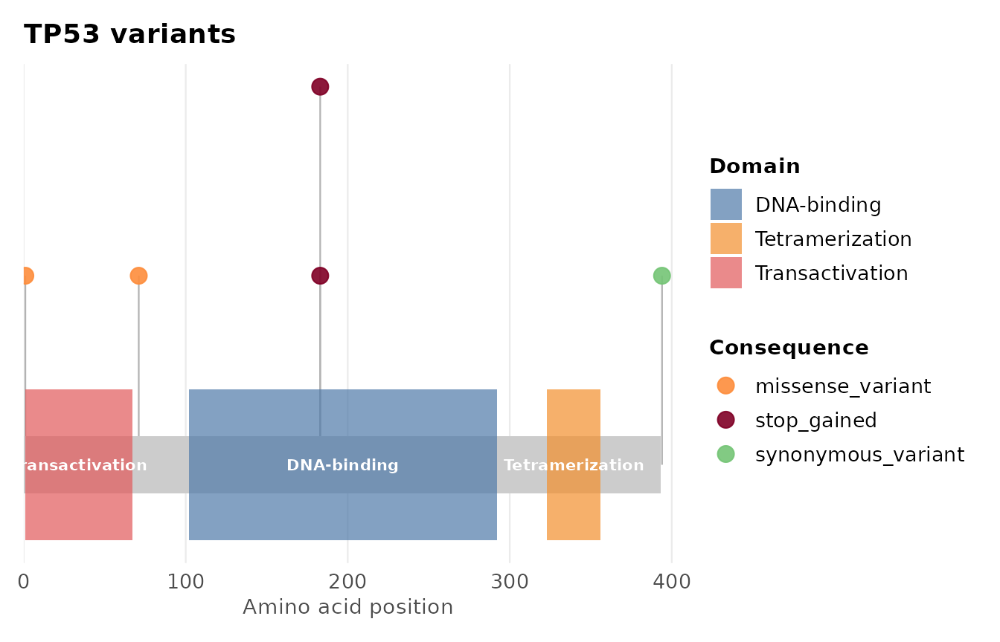
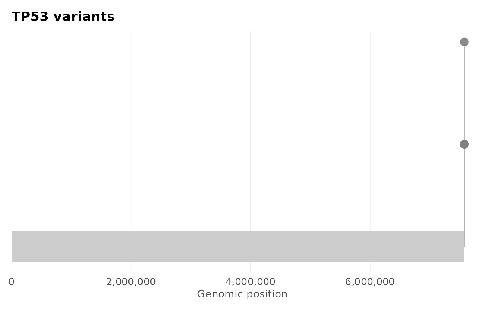
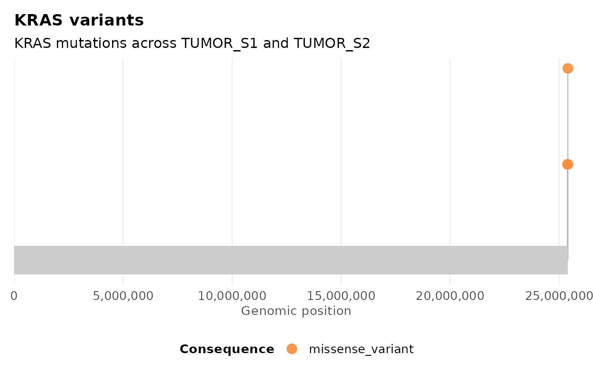
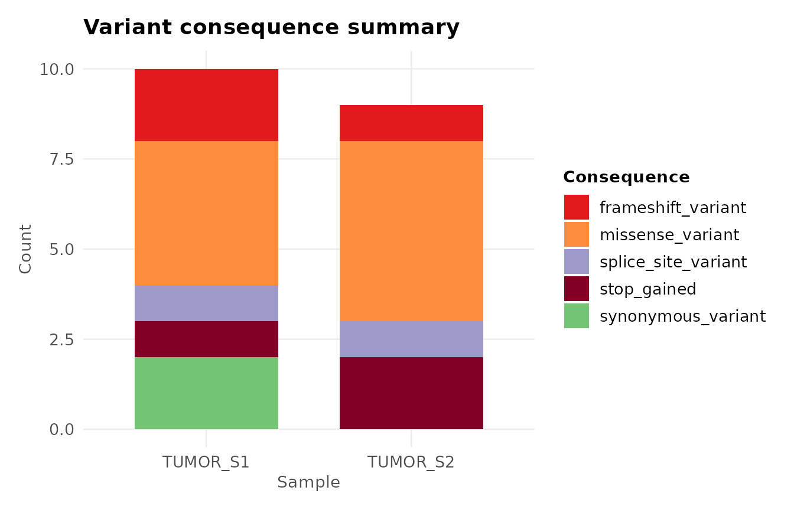
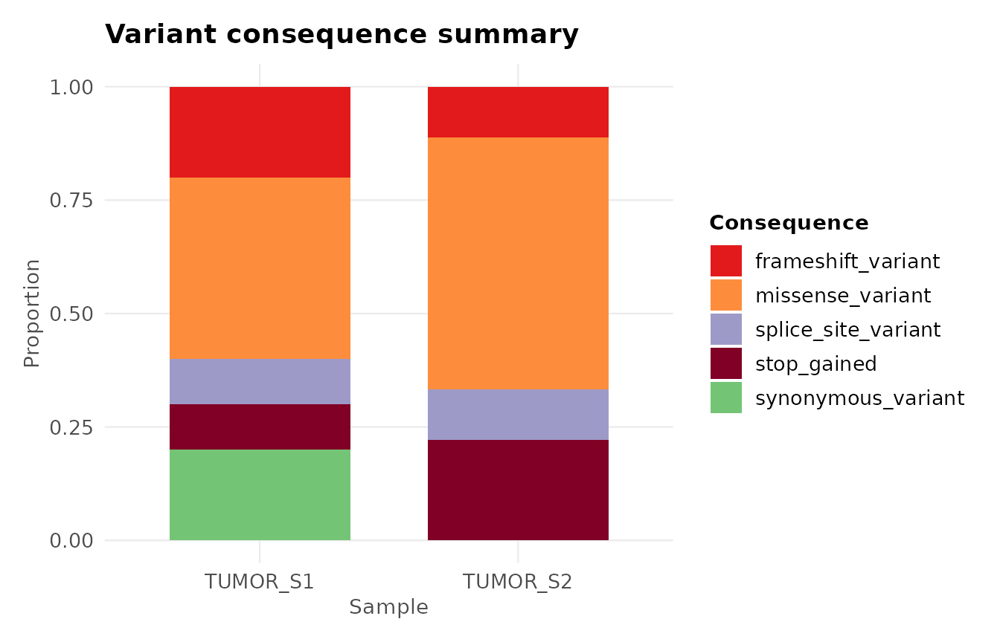
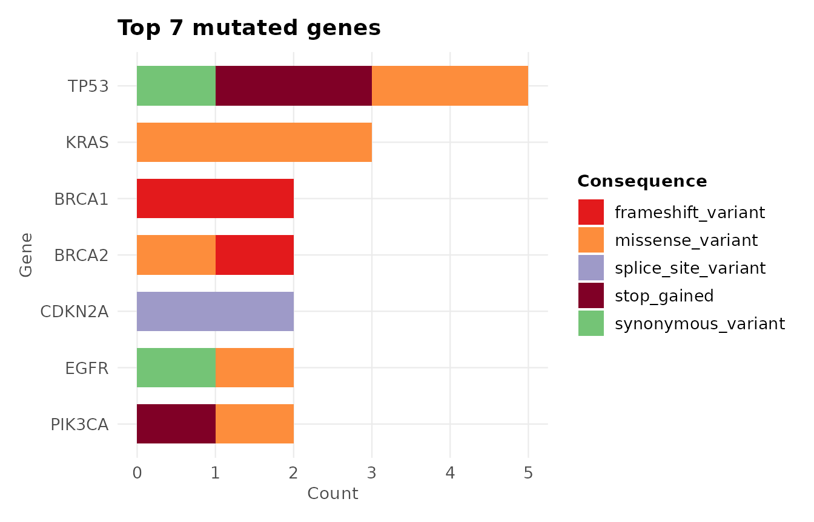
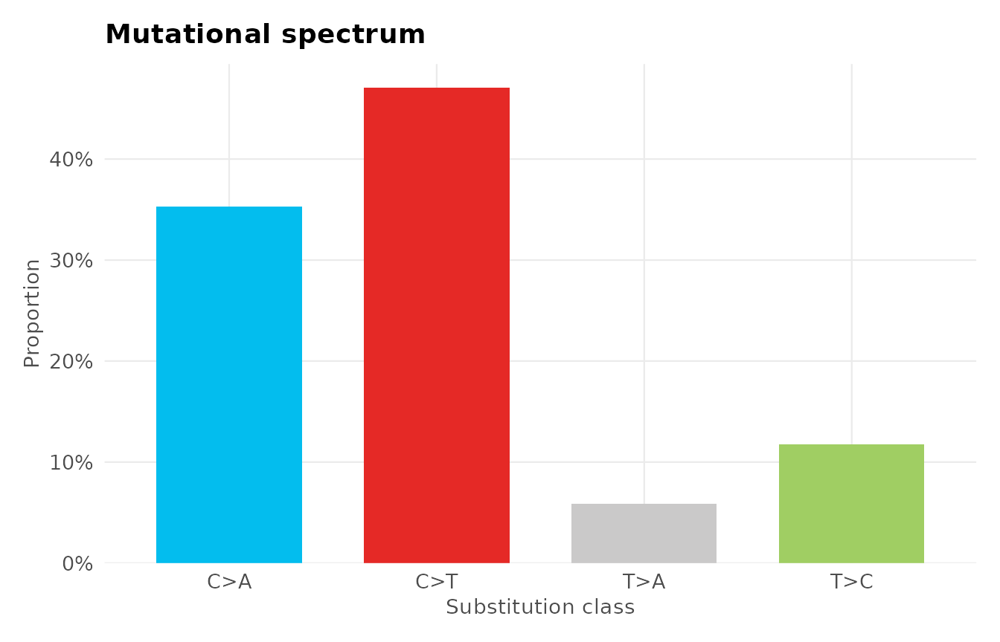
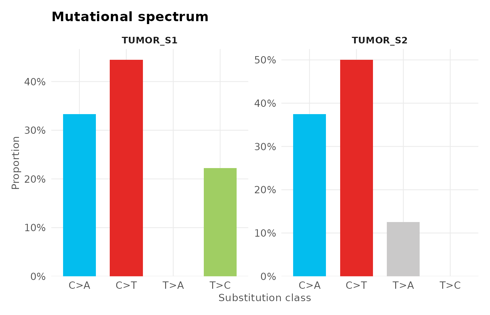

Overview
This vignette walks through a complete ggvariant
workflow: loading variant data from a VCF file or a data frame, plotting
variant positions along a gene, summarising consequences across samples
and genes, and visualising the mutational spectrum. By the end you will
have produced each of the package’s core plot types against the bundled
example data and know how to point them at your own.
Installation
# Install from CRAN
install.packages("ggvariant")
# Or install the development version from GitHub
# remotes::install_github("yourname/ggvariant")Loading variant data
Option 1: From a VCF file
read_vcf() parses standard VCF v4.x files — including
gzipped files and multi-sample VCFs — and returns a tidy data frame
called a gvf object. Functional annotations from SnpEff
(ANN) or VEP (CSQ) INFO fields are extracted
automatically.
vcf_file <- system.file("extdata", "example.vcf", package = "ggvariant")
variants <- read_vcf(vcf_file)
#> ℹ Reading VCF: example.vcf
#> ✔ Reading VCF: example.vcf [62ms]
#>
#> Loaded 19 variant records across 7 chromosomes.
head(variants)
#> <gvf: 6 variants, 1 sample, 3 chromosomes, 4 genes>
#> chrom pos ref alt qual filter consequence gene sample
#> 1 chr17 7577120 C T 250 PASS missense_variant TP53 TUMOR_S1
#> 3 chr17 7578210 G T 95 PASS stop_gained TP53 TUMOR_S1
#> 4 chr17 7579472 A G 310 PASS synonymous_variant TP53 TUMOR_S1
#> 6 chr13 32914437 G A 175 PASS frameshift_variant BRCA2 TUMOR_S1
#> 7 chr17 41244000 AT A 310 PASS frameshift_variant BRCA1 TUMOR_S1
#> 9 chr7 55242465 C A 90 PASS synonymous_variant EGFR TUMOR_S1The result is a plain data frame with one row per variant per sample, with columns for chromosome, position, alleles, consequence, gene, and sample name. Because it is a standard data frame, you can filter, subset, and manipulate it with any R tools you already know.
Option 2: From a data frame or Excel export
If your variants are in a spreadsheet or the output of another tool,
use coerce_variants() to map your column names onto the
format ggvariant expects. You only need to specify the
columns that differ from the defaults.
# Example: data exported from a custom pipeline or Excel
my_df <- read.csv("my_variants.csv")
variants <- coerce_variants(my_df,
chrom = "Chr",
pos = "Position",
ref = "Ref_Allele",
alt = "Alt_Allele",
consequence = "Variant_Class",
gene = "Hugo_Symbol",
sample = "Tumor_Sample"
)Any extra columns in your data frame are carried over automatically, so you never lose information.
Lollipop plot
The lollipop plot shows where variants fall along a gene, coloured by consequence. It is particularly useful for identifying mutational hotspots — positions that are recurrently mutated across samples.
plot_lollipop(variants, gene = "TP53")
Adding protein domain annotations
Overlaying known protein domains helps interpret where
variants fall functionally. Provide a data frame with name,
start, and end columns (in amino acid
coordinates):
tp53_domains <- data.frame(
name = c("Transactivation", "DNA-binding", "Tetramerization"),
start = c(1, 102, 323),
end = c(67, 292, 356)
)
# Scale genomic positions to protein coordinates
tp53 <- variants[variants$gene == "TP53", ]
tp53$pos <- round(
(tp53$pos - min(tp53$pos)) /
(max(tp53$pos) - min(tp53$pos)) * 393
) + 1
plot_lollipop(tp53, gene = "TP53",
domains = tp53_domains,
protein_length = 393)
Colouring by sample
To see which sample each variant comes from instead of its
consequence, change color_by:
plot_lollipop(variants, gene = "TP53", color_by = "sample")
#> Warning: No shared levels found between `names(values)` of the manual scale and the
#> data's colour values.
#> No shared levels found between `names(values)` of the manual scale and the
#> data's colour values.
Customising further
Because every ggvariant function returns a standard
ggplot object, you can add any ggplot2 layers
on top:
library(ggplot2)
plot_lollipop(variants, gene = "KRAS") +
labs(subtitle = "KRAS mutations across TUMOR_S1 and TUMOR_S2") +
theme(legend.position = "bottom")
Consequence summary
plot_consequence_summary() gives an overview of what
types of variants are present — missense, frameshift,
synonymous, and so on — broken down by sample or gene.
By sample
plot_consequence_summary(variants)
Each bar represents one sample, stacked by consequence type. This immediately reveals whether two samples have similar or very different mutational profiles.
Proportional view
To compare samples with different total variant counts fairly, use
position = "fill":
plot_consequence_summary(variants, position = "fill")
By gene
To see which genes carry the most variants and what types they are:
plot_consequence_summary(variants, group_by = "gene", top_n = 7)
TP53 stands out immediately as the most mutated gene, a pattern typical of many cancer cohorts.
Mutational spectrum
The mutational spectrum shows the relative frequency of each of the six single-base substitution (SBS) classes — C>A, C>G, C>T, T>A, T>C, T>G — normalised to the pyrimidine base (so A>G is represented as T>C, matching COSMIC convention).
plot_variant_spectrum(variants)
#> Excluded 2 non-SNV records from spectrum plot.
C>T substitutions are the most common class in this example. In real data, a strongly C>T-dominant spectrum can point to processes such as UV damage or age-related deamination, though interpreting a signature reliably requires many more mutations than this small example contains.
Faceted by sample
To compare mutational processes between samples side by side:
plot_variant_spectrum(variants, facet_by_sample = TRUE)
#> Excluded 2 non-SNV records from spectrum plot.
Interactive plots
All plot functions support interactive = TRUE, which
wraps the output in a plotly interactive plot. This is
ideal for sharing with collaborators who don’t use R — simply save as an
HTML file and send it.
# Requires the plotly package
# install.packages("plotly")
p <- plot_lollipop(variants, gene = "TP53", interactive = TRUE)
p # opens in RStudio viewer or browserColour palettes and theming
Access the built-in palettes
# See the consequence colour palette
gv_palette("consequence")
#> missense_variant missense Missense_Mutation
#> "#FD8D3C" "#FD8D3C" "#FD8D3C"
#> synonymous_variant synonymous Silent
#> "#74C476" "#74C476" "#74C476"
#> frameshift_variant frameshift_deletion frameshift_insertion
#> "#E31A1C" "#E31A1C" "#FC4E2A"
#> stop_gained Nonsense_Mutation stop_lost
#> "#800026" "#800026" "#BD0026"
#> splice_site_variant Splice_Site inframe_insertion
#> "#9E9AC8" "#9E9AC8" "#6BAED6"
#> inframe_deletion In_Frame_Del In_Frame_Ins
#> "#2171B5" "#2171B5" "#6BAED6"
#> 5_prime_UTR_variant 3_prime_UTR_variant intron_variant
#> "#BCBDDC" "#DADAEB" "#D9D9D9"
#> SNV deletion insertion
#> "#BDBDBD" "#41AB5D" "#A1D99B"
#> MNV Other
#> "#F768A1" "#7F7F7F"
# See the COSMIC SBS spectrum palette
gv_palette("spectrum")
#> C>A C>G C>T T>A T>C T>G
#> "#03BDEE" "#010101" "#E52926" "#CAC9C9" "#A0CE63" "#ECC7C5"Apply the theme to your own plots
theme_ggvariant() is exported so you can apply the same
clean look to any ggplot2 figure in your analysis:
ggplot(my_data, aes(x, y)) +
geom_point() +
theme_ggvariant()Summary
| Function | Input | Output |
|---|---|---|
read_vcf() |
VCF file path |
gvf data frame |
coerce_variants() |
Any data frame |
gvf data frame |
plot_lollipop() |
gvf + gene name |
Lollipop ggplot
|
plot_consequence_summary() |
gvf |
Stacked bar ggplot
|
plot_variant_spectrum() |
gvf |
SBS spectrum ggplot
|
gv_palette() |
palette type | Named colour vector |
theme_ggvariant() |
— |
ggplot2 theme |
All plot functions return a ggplot object — extend them
freely with standard ggplot2 syntax, and use
interactive = TRUE with any of them to get a
plotly interactive version.
Session information
sessionInfo()
#> R version 4.6.1 (2026-06-24)
#> Platform: x86_64-pc-linux-gnu
#> Running under: Ubuntu 24.04.4 LTS
#>
#> Matrix products: default
#> BLAS: /usr/lib/x86_64-linux-gnu/openblas-pthread/libblas.so.3
#> LAPACK: /usr/lib/x86_64-linux-gnu/openblas-pthread/libopenblasp-r0.3.26.so; LAPACK version 3.12.0
#>
#> locale:
#> [1] LC_CTYPE=C.UTF-8 LC_NUMERIC=C LC_TIME=C.UTF-8
#> [4] LC_COLLATE=C.UTF-8 LC_MONETARY=C.UTF-8 LC_MESSAGES=C.UTF-8
#> [7] LC_PAPER=C.UTF-8 LC_NAME=C LC_ADDRESS=C
#> [10] LC_TELEPHONE=C LC_MEASUREMENT=C.UTF-8 LC_IDENTIFICATION=C
#>
#> time zone: UTC
#> tzcode source: system (glibc)
#>
#> attached base packages:
#> [1] stats graphics grDevices utils datasets methods base
#>
#> other attached packages:
#> [1] ggplot2_4.0.3 ggvariant_0.2.0
#>
#> loaded via a namespace (and not attached):
#> [1] gtable_0.3.6 jsonlite_2.0.0 dplyr_1.2.1 compiler_4.6.1
#> [5] tidyselect_1.2.1 jquerylib_0.1.4 systemfonts_1.3.2 scales_1.4.0
#> [9] textshaping_1.0.5 yaml_2.3.12 fastmap_1.2.0 R6_2.6.1
#> [13] labeling_0.4.3 generics_0.1.4 knitr_1.51 htmlwidgets_1.6.4
#> [17] tibble_3.3.1 desc_1.4.3 bslib_0.12.0 pillar_1.11.1
#> [21] RColorBrewer_1.1-3 rlang_1.3.0 cachem_1.1.0 xfun_0.60
#> [25] fs_2.1.0 sass_0.4.10 S7_0.2.2 otel_0.2.0
#> [29] cli_3.6.6 pkgdown_2.2.1 withr_3.0.3 magrittr_2.0.5
#> [33] digest_0.6.39 grid_4.6.1 lifecycle_1.0.5 vctrs_0.7.3
#> [37] evaluate_1.0.5 glue_1.8.1 farver_2.1.2 ragg_1.5.2
#> [41] rmarkdown_2.31 tools_4.6.1 pkgconfig_2.0.3 htmltools_0.5.9